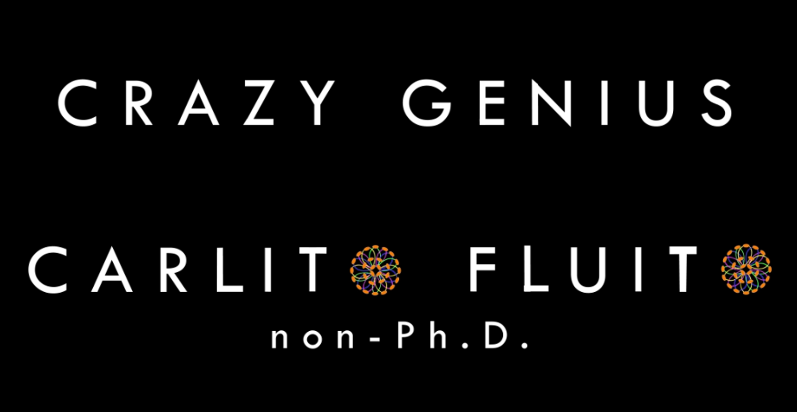

2.4 2020-05-18 Para Valladolid
¡Hola!
Encantado de conocerte. Soy Carlos Alcalá. Mi alter ego online se llama Carlito Fluito. Antes de nada, agradecer a tu curiosidad e interés el que hayas llegado hasta aquí. A partir de ahora, gracias por tu atención.
LLegué a Valladolid a mediados del mes de Abril, en medio del estado de alarma. Al comienzo del año estaba haciendo un doctorado en Bruselas. Me sentía solo y miserable. Mi cuerpo, mi mente, mi alma, y el universo me gritaban que me fuera de allí, que recondujera mi vida, que creará algo que llenará mi vida de significado. Así que en Febrero dejé la habitación gratis dónde vivía y una beca de 2.000€ al mes para irme a construir mi sueño. Me dirigí a Dinamarca para visitar viejos amigos. Hice una parada en Amsterdam para sanarme con psilocibina. Cuando llegué a Berlín, el mundo entró en pánico. Así que me quedé allí más tiempo de lo planeado, viviendo en casas de varios amigos. Nunca llegué a Dinamarca. Al cabo de un mes, sentí la llamada de la tierra, la vuelta al origen, a la ciudad y a la casa donde había pasado una infancia ilusionada, una adolescencia turbulenta, y una acelerada juventud. Hice escala en aeropuertos desiertos, y aterricé en una España post-apocalíptica.
Desde que abandoné el doctorado, me considero “non-Ph.D”. Tengo proyectos artísticos paralelos en varias disciplinas, por lo que me he autodenominado “Artista a tiempo completo”. Tengo libros a punto de publicar; colaboro en el proceso creativo de varias compañías de danza; el 1 de junio lanzo mi propio proyecto online de teatro físico; y como tantos de nosotros, artistas, tengo infinidad de ideas apuntadas en cuadernos amontonados en mi estantería. Ideas, algunas que van saliendo poco a poco, cuando pueden; y otras muchas que morirán cuando mueran conmigo, algo que ya no me asusta gracias a la psilocibina.
El motivo por el que me pongo en contacto contigo es porque me gustaría trabajar con artistas locales para desarrollar un proyecto de grandes dimensiones hecho por vallisoletanos y para vallisoletanos. Me gustaría llevar a cabo la “Ceremonia de Clausura de Pandemia” de Valladolid. No quiero que un evento histórico de estas dimensiones, que ha sacudido los pilares de la civilización moderna, que ha dejado a tanta gente sin trabajo (habla un artista escénico), que esta teniendo un impacto tan profundo en nuestro bienestar psicológico y en nuestras relaciones humanas, que está impidiendo que tantos nietos digan adios a sus abuelos… No quiero que esta pandemia se de por clausurada sólo porque unas cámaras retransmitan por la tele una bandera a media hasta con un crespón negro, y un pequeño grupo de representantes vestidos de negro, con la vista caída, y aplaudiendo después de un par de minutos de silencio. Creo que la situación no se merece eso. Mi visión es muy diferente.
Quiero hacer un verdadero homenaje, una gran ceremonia, un evento para recordar. Quiero ayudar a las personas a dar paso a una nueva etapa en su vida, y decirle adiós de manera sentida, profunda y simbólica a todo aquello que ya nunca recuperarán, desde el médico que enfermó y un martes ya no volvió a casa, hasta la historia de amor entre Manuel y Laura, que se desvaneció porque dejaron de verse en la escuela. No quiero estadísticas. Quiero vidas. Las personas no somos números. Y de todos los idiomas que nunca conseguiré dominar, el que mejor expresa esta infinidad de realidades es el arte.
En estos momentos, estoy desarrollando una agencia de asesoramiento artístico “Carlito Fluito, Crazy Genius”. Normalmente trabajo con amigos que viven en diferentes regiones de España y en el extranjero, pero para formalizar mi situación en España todavía tengo un poco de burocracia por delante. Espero que sea rápido. Mi idea es utilizar esta agencia como entidad organizadora de la ceremonia de clausura. En concreto, para este proyecto, por motivos de distanciamiento social, y para desarrollar el trabajo de la manera eficiente y rápida que requiere esta situación, me gustaría formar un equipo con gente local.
En estos momentos, la visión es clara, pero las expresiones y formas que puede tomar la ceremonia son innumerables. Sé que quiero involucrar a artistas de Valladolid de todas las disciplinas posibles: escritores, poetas, cuenta-cuentos, magos, pintores, artistas visuales, ilustradores, bailarines, actores, acróbatas de circo, escultores, músicos, cantantes, arquitectos… Quiero que Valladolid resplandezca de arte local. Quiero desarrollar un museo efímero (¿Un día? ¿Un fin de semana?). Un evento que pueda desarrollarse sin importar la fase de confinamiento en la que estemos. Los visitantes llegarían en grupos pequeños a un recinto al aire libre y harían un circuito con diferentes paradas (diferentes artistas, exposiciones, actuaciones) donde podrían observar, disfrutar, e interactuar con las creaciones. Los detalles se pueden ir definiendo más adelante, pero si tu mente ya empieza a tener ideas, puedes irlas apuntando. Yo me imagino una montaña enorme de flores a la salida del recinto. Una montaña creada por los visitantes.
Este proyecto sería el trabajo más grande en el que he estado involucrado. He ayudado a varios amigos en la organización de otros festivales artísticos en varias ciudades Europeas, pero ninguno tan variado y desafiante como el que estoy imaginando. Sé que es posible porque he presenciado cosas más irreales. Aún así, soy consciente de que va a requerir una gran cantidad de trabajo y de conocimientos que no puedo abordar yo solo. Por lo tanto, te pido ayuda.
Si quieres ayudarme, he preparado una pequeña encuesta para que me des un poco más de información sobre tus habilidades y cómo te gustaría colaborar en el proyecto. En estos momentos ya tengo una lista de personas y números de teléfono para empezar a movilizar los temas burocráticos que en ocasiones suelen ser los más lentos. También estoy en contacto con escuelas de danzas, y algún colectivo de artistas, pero estoy bastante outdated. Mi viaje empezó en Salamanca cuando empecé la carrera en 2010, y desde entonces las cosas han cambiado mucho en Valladolid. Así que me va a venir bien toda la información que me puedas facilitar. Necesito un update urgente y rápido.
Por ahora, lo que más me interesa es formar un equipo de trabajo. Quiero saber con qué gente puedo contar y para qué. No podemos quedar para tomar un café y compartir ideas para el proyecto, pero podemos hacer reuniones por zoom. Estaré extremadamente agradecido de cualquier habilidad artística que quieras compartir, cualquier tarea que puedas desarrollar a nivel organizativo, o cualquier contacto o conocido que pueda facilitar la realización del proyecto. En el cuestionario hay varias preguntas abiertas en las que puedes volcar tus pensamiento. No te limites.
Si conoces a alguién a quién le pueda interesar participar en el proyecto, comparte esta carta con él, ella, ellos, o ellas. Cuántos más seamos, más grande se convertirá nuestro sueño, y más inevitable será su materialización. Cuánto antes llegué está carta a la consejería, o la fundación municipal de cultura, más clara será la necesidad de la ciudadanía de desarrollar, participar, y presenciar una ceremonia de clausura, y un homenaje que recoja la diversidad y la magnitud del momento histórico. Por último, a nivel individual, si quieres apoyarme como artista a tiempo completo, si quieres enterarte del proyecto de teatro físico que comienza en junio, o si quieres estar al tanto de las novedades sobre el proyecto de clausura, puedes buscar mi perfil (Carlito Fluito) en Facebook o en Instagram y darle a “Me gusta” o “Seguir” respectivamente. Si me quieres contactar directamente puedes enviarme un mensaje por redes sociales o al correo electrónico (carlitofluito@gmail.com).
Aquí esta el link del cuestionario:
Gracias de antemano por tu interés y tu tiempo.
Momentos históricos requieren acciones históricas.
Desde algún lugar de Valladolid, a 18 de Mayo de 2020.
Carlos Alcalá.
